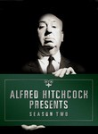
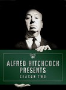

Alfred Hitchcock Presents



You Can't be A Little Girl All Your Life (1961) Airs on 1961-11-21
S7 - E7 of Alfred Hitchcock Presents
S7 - E7 of Alfred Hitchcock Presents
Alfred Hitchcock Presents You Can't be A Little Girl All Your Life (1961) Airs on 1961-11-21 S7 - E7 of Alfred Hitchcock Presents Watched an episode not known by IMDb? |